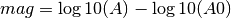
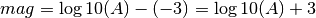

MLv is the Richter (1935) magnitude measured on the vertical component.
The MLv amplitude calculation is very similar to the original ML, except that it is measured on the vertical component.
The individual station MLv is calculated using the following formula:

A is the MLv Wood-Anderson amplitude in millimeters. The second term is the empirical calibration function, which in turn is a function of the hypocentral distance (see Richter, 1935). This calibration function can be configured globally or per station using the config variable module.trunk.global.MLv.logA0, e.g.
module.trunk.global.MLv.logA0 = "0 -1.3;60 -2.8;400 -4.5;1000 -5.85"
The logA0 configuration string consists of an arbitrary number of distance-value pairs separated by semicolons. The distance is in km and the value corresponds to the log10(A0) term above.
Within each interval the values are computed by linear interpolation. E.g. for the above default specification, at a distance of 100 km the logA0 value would be ((-4.5)-(-2.8))*(100-60)/(400-60)-2.8 = -3.0 -- in other words, at 100 km distance the magnitude would be

which is according to the original Richter (1935) formula if the amplitude is measured in millimeters. Note that the baseline for logA0 is millimeters for historical reasons, while internally in SeisComP 3 the Wood-Anderson amplitudes are measured and stored micrometers.
Several distance-value pairs can be configured for different ranges of epicenter distance.